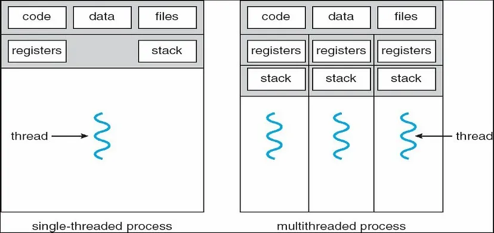
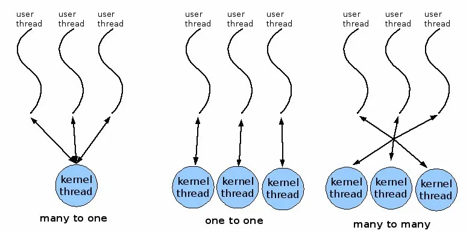
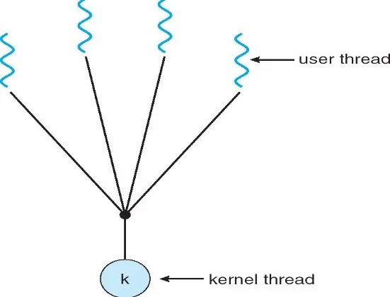
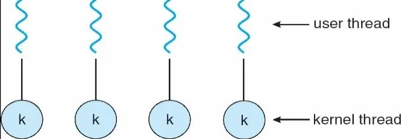
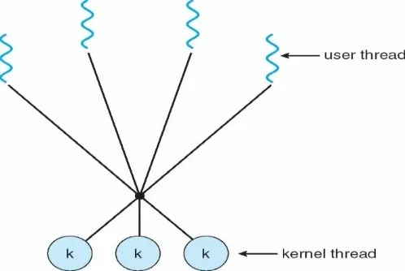

Pengertian dan Contoh dari Thread
Thread merupakan sebuah status eksekusi (running, ready, dll.), sering disebut dengan lightweight process. Merupakan unit dasar dari penggunaan CPU, yang terdiri dari thread_id, program counter, register set, dan stack. Sebuah thread berbagi code section, data section, dan sumber daya sistem operasi dengan Thread lain yang dimiliki oleh proses yang sama.
Thread merupakan cara dari komputer untuk menjalankan dua atau lebih task dalam waktu bersamaan, sedangkan multithreading adalah cara komputer untuk membagi-bagi pekerjaan yang dikerjakan sebagian-sebagian dengan cepat sehingga
- Single-threading: Sebuah proses tradisional atau heavyweight process mempunyai thread tunggal yang berfungsi sebagai pengendali.
- Multi-threading: Sebuah proses dengan thread yang banyak dan mengerjakan lebih dari satu tugas pada satu satuan waktu.

Proses - Proses Thread dalam Sistem Operasi
Sistem operasi telah mendukung proses multithreading. Setiap sistem operasi memiliki konsep tersendiri dalam pengimplementasiannya. Sistem operasi dapat mendukung thread pada tingkatan kernel maupun tingkatan pengguna. Adapun tipe dari thread ini adalah :
- Thread pengguna: Thread yang pengaturannya dilakukan oleh pustaka thread pada tingkatan pengguna. Karena pustaka yang menyediakan fasilitas untuk pembuatan dan penjadwalan thread, thread pengguna cepat dibuat dan dikendalikan.Thread pengguna didukung kernel serta diimplementasikan dengan pustaka (library) thread pada tingkatan pengguna. Pustaka (library) menyediakan fasilitas untuk pembuatan thread, penjadwalan thread, dan manajemen thread tanpa dukungan dari kernel. Semua pembuatan dan penjadwalan thread dilakukan dalam ruang pengguna tanpa campur tangan kernel. Thread pengguna biasanya dapat cepat dibuat dan dikendalikan.
- Thread Kernel: Thread yang didukung langsung oleh kernel. Pembuatan, penjadwalan dan manajemen thread dilakukan oleh kernel pada kernel space. Karena dilakukan oleh sistem operasi, proses pembuatannya akan lebih lambat jika dibandingkan dengan thread pengguna. Thread kernel didukung langsung oleh sistem operasi. Pembuatan, penjadwalan, dan manajemen thread dilakukan oleh kernel pada kernel space. Pengaturan thread dilakukan oleh sistem operasi, sehingga pembuatan dan pengaturan kernel thread lebih lambat dibandingkan user thread.

Model-Model Multi Threading
Model Many-to-One. Model ini memetakan beberapa thread tingkatan pengguna ke sebuah thread. tingkatan kernel. Pengaturan thread dilakukan dalam ruang pengguna sehingga efisien. Hanya satu thread pengguna yang dapat mengakses thread kernel pada satu saat. Jadi Multiple thread tidak dapat berjalan secara paralel pada multiprosesor. Kekurangannya adalah ketika ada satu blocking systemc call, semua akan menjadi terblok juga. Contoh: Solaris
Model One-to-One. Model ini memetakan setiap thread tingkatan pengguna ke setiap thread. Ia menyediakan lebih banyak concurrency dibandingkan model Many-to-One. Keuntungannya sama dengan keuntungan thread kernel. Kelemahan model ini ialah setiap pembuatan thread pengguna memerlukan tambahan thread kernel. Karena itu, jika mengimplementasikan sistem ini maka akan menurunkan kinerja dari sebuah aplikasi sehingga biasanya jumlah thread dibatasi dalam sistem. Contoh: Windows NT/XP/2000 , Linux, Solaris 9, OS/2.
Model Many-to-Many. Model ini memultipleks banyak thread tingkatan pengguna ke thread kernel yang jumlahnya sedikit atau sama dengan tingkatan pengguna. Model ini mengizinkan developer membuat thread sebanyak yang ia mau tetapi concurrency tidak dapat diperoleh karena hanya satu thread yang dapat dijadwalkan oleh kernel pada suatu waktu. Keuntungan dari sistem ini ialah kernel thread yang bersangkutan dapat berjalan secara paralel pada multiprosessor dan lebih efisien. Contoh : Solaris 2, IRIX, HPUX.
Pustaka Thread
Pustaka Thread atau yang lebih familiar dikenal dengan Thread Library bertugas untuk menyediakan API untuk programmer dalam menciptakan dan memanage thread. Ada dua cara dalam mengimplementasikan pustaka thread:
- Menyediakan API dalam level pengguna tanpa dukungan dari kernel sehingga pemanggilan fungsi tidak melalui system call. Jadi, jika kita memanggil fungsi yang sudah ada di pustaka, maka akan menghasilkan pemanggilan fungsi call yang sifatnya lokal dan bukan system call.
- Menyediakan API di level kernel yang didukung secara langsung oleh sistem operasi. Pemanggilan fungsi call akan melibatkan system call ke kernel. Ada tiga pustaka thread yang sering digunakan saat ini, yaitu: POSIX Pthreads, Java, dan Win32. Implementasi POSIX standard dapat dengan cara user level dan kernel level, sedangkan Win32 adalah kernel level. Java API thread dapat diimplementasikan oleh Pthreads atau Win32.
Thread Cancellation
Pada web server yang menerapkan multithreading ada dua masalah yang timbul:
- Ukuran waktu yang diperlukan untuk menciptakan thread yang melayani permintaan yang diajukan pada kenyataannya thread dibuang seketika sesudah ia menyelesaikan tugasnya.
- Pembuatan thread yang tidak terbatas jumlahnya dapat menurunkan performa dari sistem.
Pemberhentian target Thread dapat dilakukan dengan 2 cara:
- Asynchronous cancellation. Suatu thread seketika itu juga membatalkan target thread.
- Deferred cancellation. Suatu thread secara periodik memeriksa apakah ia harus batal, cara ini memperbolehkan target thread untuk membatalkan dirinya secara terurut.
Hal yang sulit dari pembatalan thread ini adalah ketika terjadi situasi dimana sumber daya sudah dialokasikan untuk thread yang akan dibatalkan. Selain itu kesulitan lain adalah ketika thread yang dibatalkan sedang meng-update data yang ia bagi dengan thread lain. Hal ini akan menjadi masalah yang sulit apabila digunakan asynchronous cancellation. Sistem operasi akan mengambil kembali sumber daya dari thread yang dibatalkan tetapi seringkali sistem operasi tidak mengambil kembali semua sumber daya dari thread yang dibatalkan. Alternatifnya adalah dengan menggunakan deffered cancellation. Cara kerja dari deffered cancellation adalah dengan menggunakan satu thread yang berfungsi sebagai pengindikasi bahwa target thread hendak dibatalkan. Tetapi pembatalan hanya akan terjadi jika target thread memeriksa apakah ia harus batal atau tidak. Hal ini memperbolehkan thread untuk memeriksa apakah ia harus batal pada waktu dimana ia dapat dibatalkan secara aman yang aman. Pthread merujuk sebagai cancellation points. Pada umumnya sistem operasi memperbolehkan proses atau thread untuk dibatalkan secara asynchronous. Tetapi Pthread API menyediakan deferred cancellation. Hal ini berarti sistem operasi yang mengimplementasikan Pthread API akan mengizinkan deferred cancellation.
Thread Pools
Pada web server yang menerapkan multithreading ada dua masalah yang timbul:
- Ukuran waktu yang diperlukan untuk menciptakan thread yang melayani permintaan yang diajukan pada kenyataannya thread dibuang seketika sesudah ia menyelesaikan tugasnya.
- Pembuatan thread yang tidak terbatas jumlahnya dapat menurunkan performa dari sistem.
Solusinya adalah dengan penggunaan Thread Pools, yaitu sekumpulan thread yang mengantri untuk mengerjakan tugas Cara kerjanya adalah dengan membuat beberapa thread pada proses startup dan menempatkan mereka ke pools, dimana mereka duduk diam dan menunggu untuk bekerja. Jadi, ketika server menerima permintaan, ia akan membangunkan thread dari pool dan jika thread tersedia maka permintaan tersebut akan dilayani. Ketika thread sudah selesai mengerjakan tugasnya maka ia kembali ke pool dan menunggu pekerjaan lainnya. Bila tidak ada thread yang tersedia pada saat dibutuhkan maka server menunggu sampai ada satu thread yang bebas.
Penjadwalan Thread
Begitu dibuat, thread baru dapat dijalankan dengan berbagai macam penjadwalan. Kebijakan penjadwalanlah yang menentukan setiap proses, di mana proses tersebut akan ditaruh dalam daftar proses sesuai proritasnya dan bagaimana ia bergerak dalam daftar proses tersebut. Untuk menjadwalkan thread, sistem dengan model multithreading many to many atau many to one menggunakan:
- Process Contention Scope (PCS). Pustaka thread menjadwalkan thread pengguna untuk berjalan pada LWP (lightweight process) yang tersedia.
- System Contention Scope (SCS). SCS berfungsi untuk memilih satu dari banyak thread, kemudian menjadwalkannya ke satu thread tertentu (CPU / Kernel).
References:
https://gustibgsbayu.medium.com/sistem-operasi-thread-c7fb4a35d89a

Dinda Putri Ramadani
Hai!!! Perkenalkan saya Dinda Putri Ramadani salah satu mahasiswi dari Universitas Dinamika Bangsa Jambi. Blog ini untuk memenuhi tugas Sistem Operasi yang diberikan oleh dosen pembimbing saya. Terima Kasih!!! xixixi